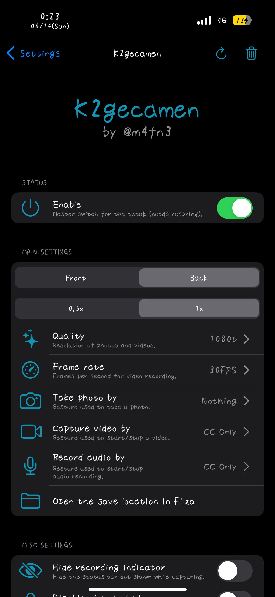
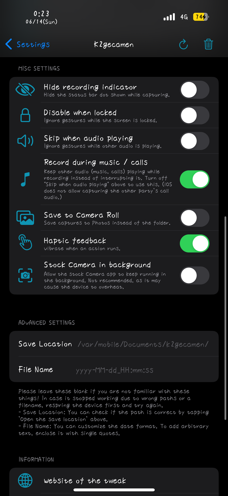

Home
Capture moments anytime in the background.
Price: 1000JPY (≒5.99USD)
BuyK2gecamen lets you take photos, record video, or record audio in the background without leaving the app currently on screen, on iOS 14 ~ 17 with rootful, rootless, or roothide jailbreaks. Start and stop capture with hardware-button gestures or dedicated Control Center modules.


iOS 14 ~ 17 on rootful, rootless, or roothide jailbreaks.
NathanLR v2 and Bootstrap v2 are supported when using a release with daemon injection. Serotonin is not supported.
Use the “Buy” button above to open the checkout page, then review the purchase details carefully.
PayPal and credit cards are accepted.
* For Chinese payment methods, contact the authorized reseller on WeChat: henan-0318.
1. Purchase a license and copy your license key.
2. Add this repository, then install K2gecamen.
3. Open K2gecamen from the Settings app.
4. Enter your license key and activate the tweak.
* After an update, activation must be refreshed, but the key does not need to be entered again.
5. Add the K2gecamen modules to Control Center.
6. Choose the hardware-button gestures you want to use for each capture type.
* For activation help, contact @m4fn3 on Twitter or email m4fn3q@gmail.com.
* One license covers up to 2 devices owned by you. Licenses are not transferable.
Record video while another app stays visible and usable on screen.
Choose the front or rear camera, 0.5x Ultra Wide or 1x lens, resolution from 480p through 4K, and frame rates from 5 to 240 FPS where supported by the device. Save recordings to the Camera Roll or a folder you specify.
Continuous auto white balance helps prevent a blue color cast during the first seconds of recording.
Start and stop recording from Control Center, a long press or double press of a volume or power button, or a Volume Up + Down press.
Record audio while continuing to use the current app.
Start and stop from the microphone Control Center module or the same configurable hardware-button gestures. Audio recordings are saved to the selected folder.
Take a photo without opening or switching to the Camera app.
Choose the front or rear camera, 0.5x Ultra Wide or 1x lens, quality, and save location. K2gecamen waits for auto white balance and exposure to settle, helping prevent blue color casts.
Trigger the shutter from Control Center or a hardware-button gesture.
An optional setting can hide the green or yellow status-bar indicator while capturing.
Use background capture only where permitted and obtain any consent required by local law.
Keep music or a call playing while K2gecamen records instead of interrupting other audio. This behavior is enabled by default and leaves playback and speaker volume unchanged.
Choose save locations and filename formats, disable gestures while the device is locked or other audio is playing, and receive haptic feedback when capture starts, stops, fails, or is interrupted.
K2gecamen can also keep a recording started in Apple's Camera app running in the background. This option is not recommended for long sessions because it may cause overheating.
Only when a user reports that the tweak doesn't work on iOS versions that are explicitly mentioned as supported on the website within 48 hours after the purchase, we'll accept your refund request. When you meet these conditions and want to request a refund, please send us a message with your device information, details of the problem and purchase information.
iOS 14 to 17 on rootful, rootless or roothide jailbreaks. NathanLR v2 and Bootstrap v2 are supported when using a release with daemon injection. Serotonin is not supported.
Add the K2gecamen modules to Control Center, or choose the hardware-button gestures you want for each capture type in the K2gecamen settings.
Photos, video and audio, in the background, without leaving the app currently on screen.
One license covers up to 2 devices owned by you. Licenses are not transferable.
PayPal and credit cards through the Ko-fi checkout. For Chinese payment methods, the authorized reseller can be contacted on WeChat (henan-0318).
v1.0.0: First release
v1.0.1: Added FPS settings, options to select activation methods and to disable actions when screen locked
Support Ultra Wide Camera (0.5x) / Improved photo taking
v1.0.2: Added haptic feedbacks!
Disabled shutter sound on photo taking & fixed bugs on action selections
v1.0.3: Added options to allow stock Camera to run in background / disable actions when sounds are played on the phone
Fixed bugs on disabling action when screen locked
v1.0.4: Added support for ios17 on NathanLR!
v1.0.5: Added a new action: Longpress power button / Fixed a bug that taking a screen shot triggers double press actions
Improved status handlings / Play haptic feedbacks when it failed or got interrupted
Changed the start/stop haptics to make them more noticeable
v1.1.0: Added an option to record audio/video while music is playing or during a call without interrupting them (enabled by default)
Fixed a blue color cast on photos and the first seconds of videos by waiting for auto white balance to settle
Localized the settings into English / Japanese / Simplified Chinese and refreshed the settings UI (SF Symbols, reset button)
Added roothide support and fixed the Up+Down action